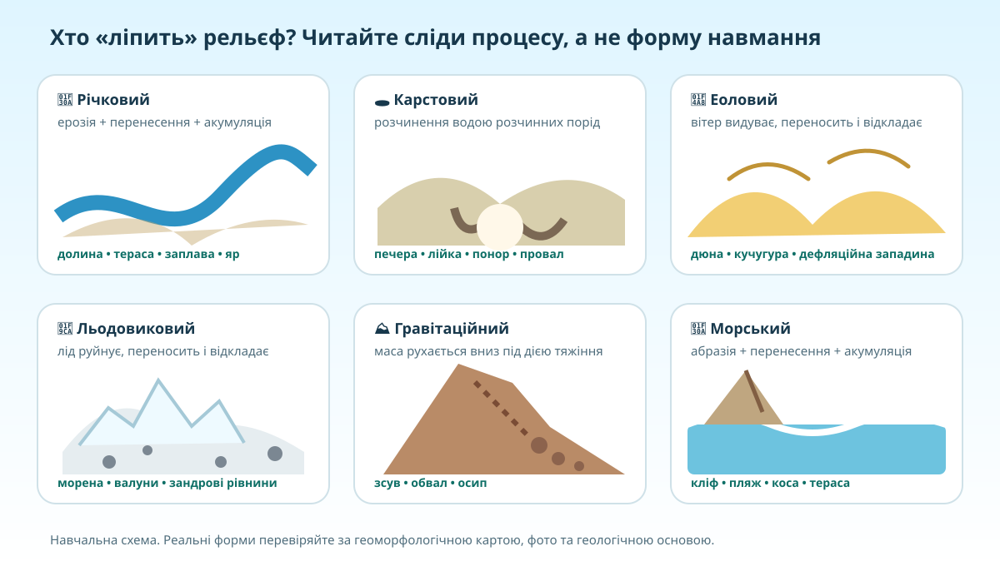

Одна форма — різні причини. Як не вгадувати навмання?
Горб, западина, урвище чи піщаний вал самі по собі ще не називають процес. Географ шукає комбінацію доказів: матеріал, форму, положення, воду, вітер, схил і геологічну основу.
Перед Вами замкнена западина на вапняковому плато. Постійної річки немає, поруч є печери. Який процес найбільш імовірний?
Шість «скульпторів» рельєфу

V-подібні долини, заплави, тераси, яри й балки. Головний агент — текуча вода.
Печери, лійки, понори, провали там, де вода розчиняє гіпс, вапняк або сіль.
Дюни, кучугури, піщані гряди й дефляційні западини. Агент — вітер.
Моренні відклади, валуни, зандрові рівнини — спадщина материкового льодовика й талих вод.
Зсуви, осипи, обвали — переміщення матеріалу вниз по схилу під дією сили тяжіння.
Кліфи, пляжі, коси й морські тераси формуються хвилями та прибережними течіями.
Читайте ландшафт як доказ


Де ці процеси проявляються в Україні?
Відкрийте геоморфологічну карту й знайдіть райони, де різняться генетичні типи рельєфу. Зіставте її з орографічною картою: висота показує який рельєф за висотою, а геоморфологічна — як і на якій основі він сформувався.
Рельєф і геоморфологія України ↗Орографічна карта ↗Національний атлас: рельєф ↗- Полісся: знайдіть сліди льодовикових і водно-льодовикових процесів.
- Поділля: знайдіть райони карсту та глибоко врізаних річкових долин.
- Причорномор’я: знайдіть морські, лиманні, акумулятивні та еолові форми.
За Національним атласом у сучасному рельєфі України значну роль відіграють денудація, лінійна ерозія, карст і гравітаційні процеси; просторовий малюнок залежить і від тектонічної основи.
Український щит vs Дніпровсько-Донецька западина
Не достатньо сказати «щит — височина, западина — низовина». Треба показати ланцюжок геологічна основа → стійкість/залягання порід → рельєф → сучасні процеси.
| Ознака | Український щит | Дніпровсько-Донецька западина |
|---|---|---|
| Тектонічна позиція | Піднята ділянка давнього кристалічного фундаменту Східноєвропейської платформи. | Велика прогинна структура з потужним осадовим чохлом. |
| Рельєфний прояв | Частіше пов’язаний із височинами, виходами кристалічних порід, порогоподібними/скелястими ділянками долин. | Значною мірою відповідає нижчим рівнинним територіям Лівобережжя, але сучасний рельєф формують також річки, леси та четвертинні відклади. |
| Що перевіряємо | Чи збігаються виходи фундаменту з підвищеннями та врізаними долинами? | Чи справді прогин завжди дає «ідеально плоску низовину», чи екзогенні процеси ускладнюють картину? |
Чому одна лише тектонічна карта не дає повного опису сучасного рельєфу?
Діагноз рельєфу: 10 коротких рішень
Доведіть, що сучасний рельєф України — результат взаємодії процесів
Сформулюйте тезу: чому рельєф не можна пояснити лише тектонічною будовою.
Наведіть 2–3 конкретні приклади: Дністер, Поділля, Полісся, Олешківські піски, узбережжя або схили.
Поясніть механізм: який процес створив/переробив форму і чому саме ці докази це підтверджують.
Мініпольове дослідження без «вгадування по фото»
1. Опрацюйте тему про типи рельєфу за походженням в електронному підручнику (орієнтир — §16, якщо нумерація Вашого видання збігається з КТП).
2. Виберіть одну форму рельєфу своєї місцевості або України. Знайдіть її на карті й складіть картку з 4 пунктів: форма → процес → 2 докази → альтернативне пояснення, яке Ви відкинули.